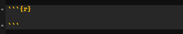
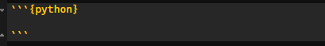
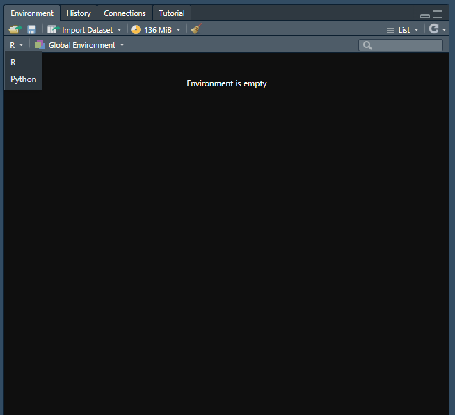

As we know, Jupyter Notebook can be used easily with our UBC login information via Syzygy. Jupyter Notebook can also be downloaded to a computer and used via Anaconda. There are many different interfaces that allow us to use Python. One of the more interesting ones to note is actually RStudio. There is a package in R called reticulate that allows us to create an RMarkdown file and use both R and Python code chunks within the same file. This is actually how this blog is able to show both R and Python content! Let’s get started on how reticulate is used in RStudio to include Python code.
First, installation is required. To install the reticulate package in RStudio from CRAN, type the following:
install.packages("reticulate")Next, we need to access the version of Python desired. Reticulate will, by default, find and use the version of Python via PATH. To check this, type Sys.which("python").
If you would like to change the version to something other than what is found in PATH, try the use_python() function. Here is an example of how to call the package from the library, and then use a different path to get to the desired Python version.
library(reticulate)
use_python("/my/file/path/python")Now that the reticulate package has been installed, we can start using Python within an RMarkdown document.
Once an RMarkdown file has been started, create a new code block. Note that on a Windows, a shortcut for adding a new code block is Ctrl+alt+i. Once a new code block appears, it should look like this:

If you were to type code here, it would be in R. To change it to Python, simply replace the ‘r’ with ‘python’. Then it will look like this:

Now, the console below will change to show Python code once something in this block is run. You can easily switch back and forth between R and Python from code chunk to code chunk.
You can also see your saved variables in the environment, separated between R and Python. Note that when you do something such as import a dataset, if you wanted to perform manipulations on the dataset in both R and Python, you will have to load the dataset in using both R and Python, and it will create separate variables which do not override each other. They will stay speparate in the environment.
To change between R and Python environments, go to the Environment window and click the dropdown arrow. It should look like this:

If you would like to see some examples, take a look at the _src folder in the GitHub repo for this blog to see how each of the posts are created in both R and Python. The link to the backend content for this blog can be found here.